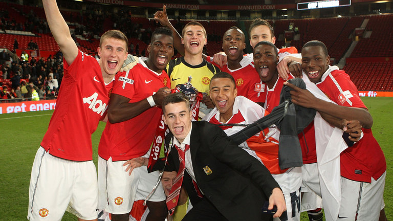
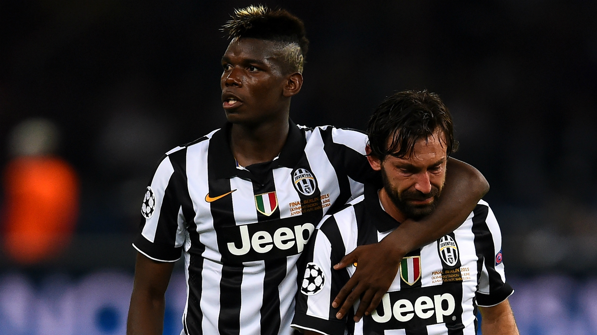
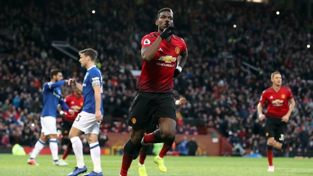
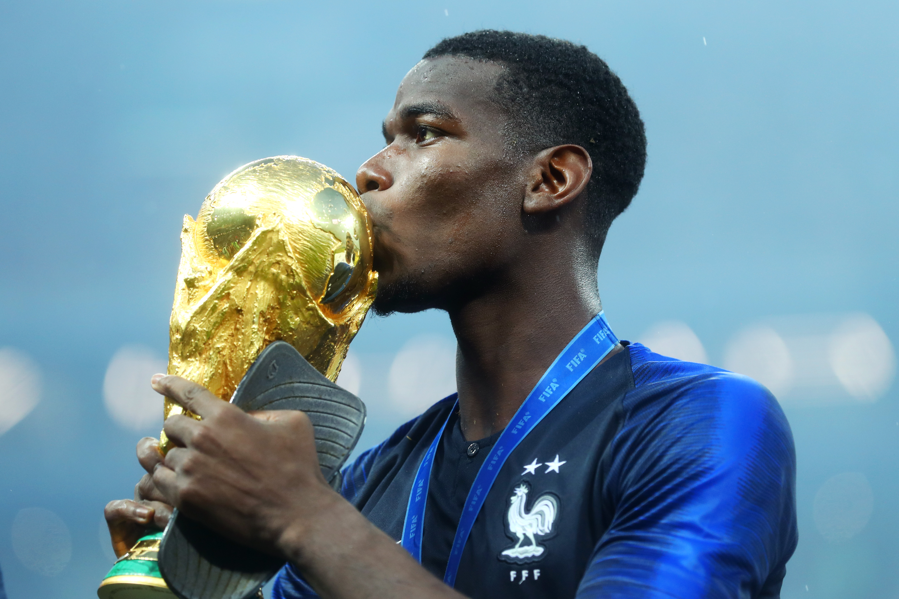
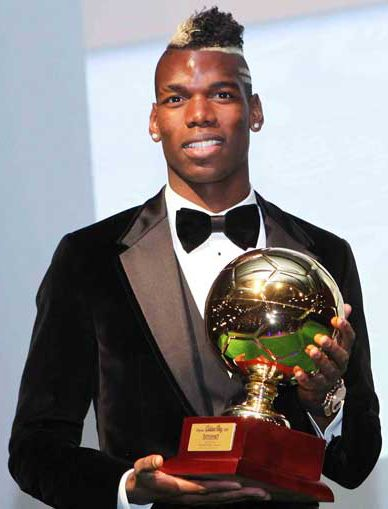

Humble Beginnings

Paul Pogba began his soccer career at the age of six, playing for local team US Roissy-en-Brie, before moving to US Torcy. After a short spell with the club, He joined Le Havre, a professional team with a famed youth academy. It was here he refined his skill before a controversial move to the Manchester United Academy at the age of 16. With the Manchester academy, he became team mates with one season sensation Adnan Janusaj and future first team teammate Jesse Lingard, winning a few pieces of silverware. He made his first team debut during the club's 2012-2013 season.
Juventus

Upset with the lack of playing time, Pogba refused to sign a new contract with Manchester United and forced a free transfer to Seria A giants Juventus. It was here that he made a name for himself despite playing alongside legend Andrea Pirlo, putting on incredibly performances and scoring sensational goals. He won his first few senior pieces of silverware here, winning the league, the Italian Cup, and the Italian Supercup numerous times.
Return to Manchester

In the summer of 2016, Pogba returned to Manchester United for a then world record transfer fee of €105 million. After a couple of seasons filled with spectacular highs in which he would dazzle across the pitch, and lows in which he fell out with his manager and would be stripped of vice-captaincy, Pogba finally found his footing in the 2018-2019 season.
2018 World Cup

Pogba was called up to his national team to play in the 2018 FIFA World Cup that took place in Russia. He led his team to its second World Cup, scoring a crucial goal in the final against Croatia.
Awards and Accolades

Individual Awards
- Europa Player of the Season - 2017
- UEFA Europa Squad of the Season - 2017
- FIFA World XI - 2015
- UEFA Team of the Year - 2015
- Bravo Award - 2015
- FIFA World Cup Best Young Player - 2014
- Golden Boy - 2013
With Manchester United
- EFL Cup - 2017
- UEFA Europa League - 2017
With Juventus
- Seria A - 2016
- Coppa Italia - 2016
- Supercoppa Italiana - 2015
- Seria A - 2015
- Coppa Italia - 2015
- Seria A - 2014
- Supercoppa Italiana - 2013
- Seria A - 2013
With National Team
- FIFA World Cup - 2018
- FIFA U-20 World Cup - 2013